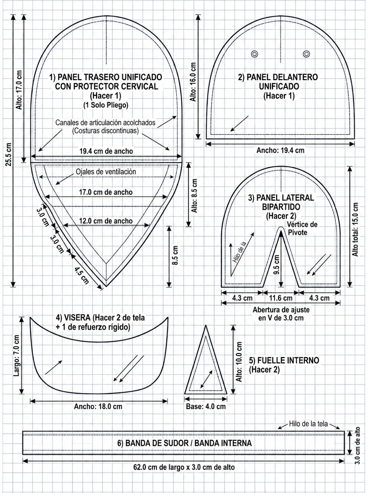

Nivel de Protección Balística: Proyectado bajo el estándar NIJ Nivel IIIA, garantizando la detención de proyectiles de armas cortas de alta energía.
DISEÑO CEFALOCERVICAL / PROTOTIPO CONCEPTUAL
Explora cada detalle.
Gira la gorra, compara sus acabados y descubre cómo se construye cada componente.
Vista interactiva
Modelo completo
Preparando el modelo 3D…
NEGRO / DORADOGORRA ARMADA
Arrastra para girar · Rueda para acercar
Vista de referencia. Activa WebGL para girar el modelo.
ACABADOBordado en dorado
CONSTRUCCIÓN
Sombras suaves y luz de contorno
Cargando el modelo tridimensional.
08 COMPONENTES / EXPLORACIÓN TÉCNICA
Selecciona una pieza.
Amplía el componente y consulta sus medidas y construcción.
COTAS DEL PLANO DE MOLDES
Patrones y medidas,
en detalle.
Medidas de corte indicadas en la lámina original. Se refieren a los moldes, no a las dimensiones de la gorra armada.
- Pliego trasero + cervical
- 19,4 × 25,5 cm
- Panel delantero
- 19,4 × 16,0 cm
- Panel lateral · ancho total × alto
- 20,2 × 15,0 cm
- Visera
- 18,0 × 7,0 cm
- Fuelle interior
- 4,0 × 10,0 cm
- Banda interior
- 62,0 × 3,0 cm
Cotas de moldes tomadas de la lámina. No son dimensiones generales de la gorra ensamblada.
CIRCUNFERENCIA INDICADA EN EL PLANO58–62 cm
El margen de costura de 1,0 cm no está incluido en las cotas; debe añadirse antes de cortar.
Materiales propuestos en el documento
- Exterior
- Ripstop negro de alta tenacidad, hidrofóbico y resistente a la abrasión. El visor permite explorar también gris y beige.
- Interior
- Malla 3D transpirable antibacteriana y cinta ribeteadora de poliamida.
- Núcleo propuesto
- 26 capas de aramida y 8 de UHMWPE. Esta composición está marcada como pendiente de verificación en el documento.
